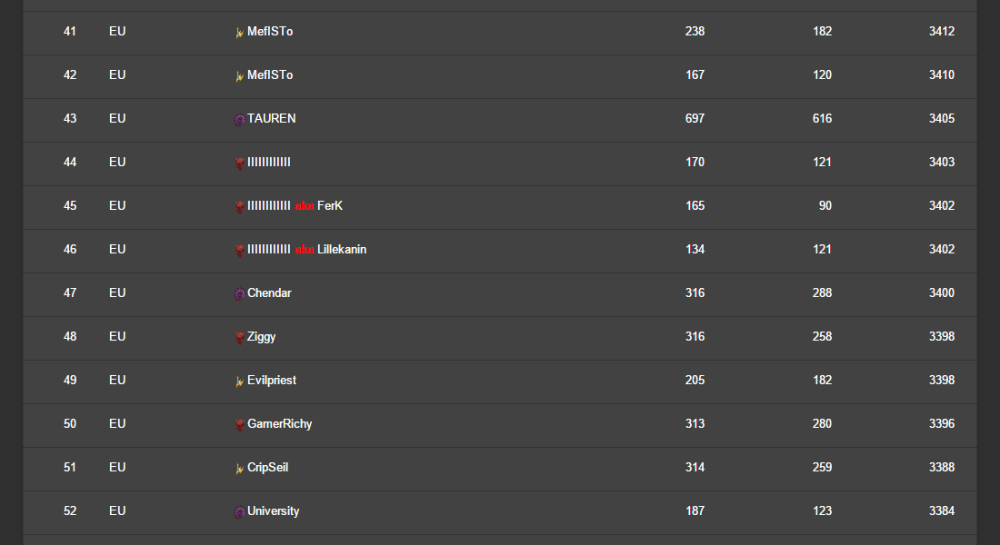

My Work
 SC2BO
SC2BO
 UCLA Neuromodulation
UCLA Neuromodulation

Barcodes Exposed
SC2BO
UCLA Neuromodulation
Status: Production
Tools: Meteor, HTML, CSS, JavaScript, Materialize, MongoDB, Blaze
SC2BO is a real-time community application built on top of Meteor. This app provides a central platform to share & view StarCraft II© Build Orders.
Status: Production
Tools: HTML, CSS, JavaScript, Materialize
This is a landing page created for the Neuromodulation Division of the University of California, Los Angeles. I designed this website using a Mobile First approach. This sites header features a rather complex layout of elements: a news slider, an introductory senetence with a word ticker, a logo image and logo text. All these arrange to look great at every possible view size.
Status: Live Demo
Tools: HTML, CSS, JavaScript, Material Design Lite, Battle.net game API, Dropbox(backend)
The StarCraft II© grandmaster ladder is dominated by high caliber players
hiding their identities, typically using a nick such as lIlIlIlIlIlI.
Barcodes Exposed utilizes the Blizzard API to load the current european grandmasters into a table.
Finally, known aliases associated with the players unique IDs
are gathered from a Dropbox file and displayed next to their account name on the table.
I have chosen the Dropbox backend as a convenient way for multiple people
to extend the alias list.
The backend consisting of only the API & a single JSON-File located within a Dropbox folder
enables me to host the site on a comfortable GitHub Pages + Dropbox solution.